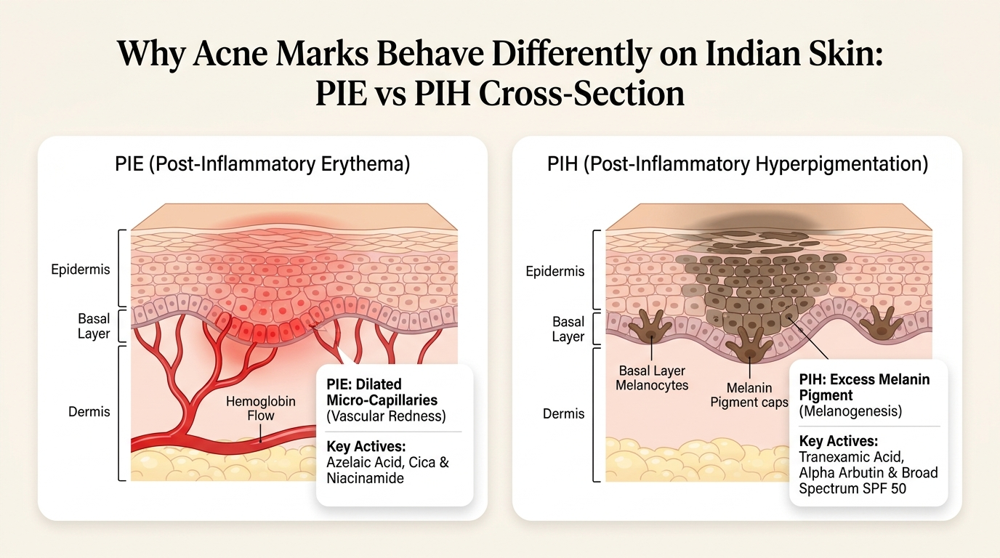
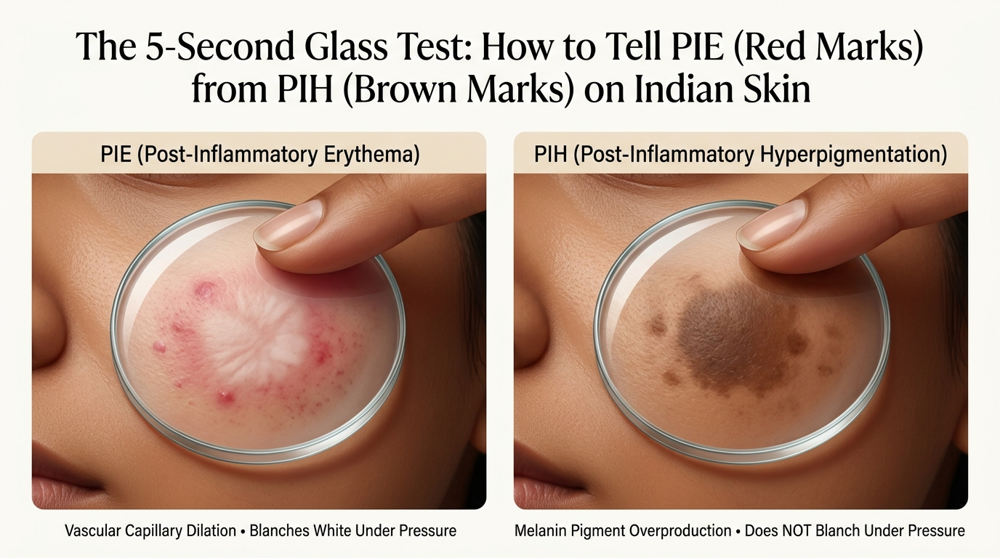

Red vs Brown: The Core Biological Difference
To understand why your acne marks behave differently, you have to look beneath the surface. When a pimple swells up with white blood cells and acne bacteria, it causes microscopic trauma to the skin tissue. What happens next depends on which biological pathway gets triggered[1].

What is PIE? (Post-Inflammatory Erythema)
Post-Inflammatory Erythema (PIE) is a vascular issue[1]. During an active breakout, your body sends tiny capillaries rushing to the pore to supply oxygen and immune cells to fight the infection.
Once the pimple dies down, those microscopic blood vessels can remain stretched, dilated, or mildly leaky right beneath your skin's surface. What you are seeing through the skin is not melanin pigment; it is actual hemoglobin (red blood) trapped in dilated micro-capillaries.
Because PIE is a blood vessel issue, traditional skin-lightening creams like Hydroquinone, Alpha Arbutin, or Kojic Acid do almost nothing for it. They target melanin enzymes, which have zero influence on dilated blood vessels.
What is PIH? (Post-Inflammatory Hyperpigmentation)
Post-Inflammatory Hyperpigmentation (PIH) is a pigmentary issue[2]. Situated at the base of your epidermis are specialized pigment factories called melanocytes.
When these melanocytes sense inflammation—whether from an infected cyst, forceful pimple squeezing, or harsh chemical burning—they go into defensive overdrive. They churn out excessive amounts of melanin (pigment) and deposit them into nearby keratinocytes (skin cells).
On Indian skin (Fitzpatrick phototypes IV to VI), melanocytes are naturally larger, more active, and far quicker to overproduce melanin than on pale Caucasian skin[2].
The 5-Second Glass Test: How to Diagnose Your Spots at Home
In clinical dermatology clinics, doctors use a technique called diascopy—pressing a transparent glass slide against the skin to evaluate cutaneous micro-circulation[1]. You can perform this exact diagnostic test at home in front of your bathroom mirror with an ordinary, clean drinking glass or a clear plastic ruler.

Step-by-Step Testing Protocol:
- Wash your face gently: Cleanse with a mild wash so there is no surface oil or tinted cream on your skin. Pat dry.
- Take a clear drinking glass: Ensure the bottom or side is clean, transparent, and completely smooth.
- Press gently against the mark: Place the clear glass flat against the post-acne mark and apply firm, even pressure for 3 to 5 seconds while looking closely through the glass.
- Observe the color shift:
- If the mark turns pale/white and temporarily disappears: You have PIE (Post-Inflammatory Erythema). The mechanical pressure pushed the blood out of the dilated capillaries, causing the spot to blanch.
- If the mark stays dark brown, tan, or black: You have PIH (Post-Inflammatory Hyperpigmentation). Melanin pigment is bound within cellular tissue and does not move under physical pressure.
Comparison Matrix: PIE vs PIH on Indian Skin
Here is a clinical side-by-side comparison to help you quickly understand the causes, behaviors, and solutions for both types of post-acne marks:
| Feature | PIE (Post-Inflammatory Erythema) | PIH (Post-Inflammatory Hyperpigmentation) |
|---|---|---|
| Primary Visual Color | Bright Pink, Red, or Purplish | Light Tan, Dark Brown, or Slate Grey |
| Underlying Biological Cause | Damaged, stretched, or dilated micro-capillaries carrying blood[1] | Overactive melanocytes depositing excess melanin pigment[2] |
| 5-Second Glass Test Result | Blanches (Turns white under pressure) | Does NOT Blanch (Stays brown under pressure) |
| Skin Phototype Predisposition | Common on Fitzpatrick I–IV, underdiagnosed on IV–V | Predominant on Fitzpatrick IV–VI (Indian, South Asian skin) |
| What Makes It Significantly Worse? | Harsh chemical scrubs, hot water, friction, alcohol toners | Sun exposure without SPF, picking pimples, heat, barrier burns |
| Gold-Standard Active Ingredients | Azelaic Acid, Centella Asiatica, Niacinamide, Tranexamic Acid | Alpha Arbutin, Kojic Acid, Azelaic Acid, Retinoids, Vitamin C |
| Average Fading Timeline on Indian Skin | 2 to 6 months (faster with vascular soothing) | 3 to 9 months (longer if deep dermal pigment) |
| Biggest Treatment Mistake | Using high-strength glycolic peels (burns capillaries into PIH) | Skipping daily sunscreen during morning commute |
How to Treat Red Marks (PIE): Calm the Capillaries
Because PIE is caused by microvascular dilation and localized barrier distress, your goal is simple: calm the inflammation, strengthen capillary walls, and avoid anything that causes facial flushing.
1. Azelaic Acid (10% to 15%) — The Single Best Multi-Tasker
If you could only pick one ingredient for post-acne marks on Indian skin, dermatologists consistently recommend Azelaic Acid[3].
Azelaic acid works by suppressing pro-inflammatory cytokines and shrinking dilated micro-vessels. Clinical trials demonstrate that applying 10% to 15% azelaic gel reduces persistent facial erythema significantly within 4 to 8 weeks[3].
2. Centella Asiatica (Cica) and Madecassoside
Derived from the Gotu Kola botanical, Centella Asiatica stimulates collagen synthesis around fragile micro-vessels and boosts micro-circulation repair. It soothes the stinging sensation that often accompanies fresh post-acne red marks.
3. Niacinamide (2% to 5%)
Niacinamide promotes the synthesis of natural ceramides and free fatty acids in your skin barrier[4]. A fortified barrier shields fragile underlying capillaries from everyday urban pollution and weather fluctuations.
Do not use walnut scrubs, 10% glycolic acid peels, or 30% AHA peel solutions on red marks. Strong acids create chemical micro-injuries. On Indian skin, chemically burning a red mark almost always causes the surrounding melanocytes to panic, turning your temporary red capillary mark into a dark, long-lasting brown patch!
How to Treat Brown Marks (PIH): Silence the Pigment Factories
When dealing with brown or dark grey post-acne spots, your strategy shifts entirely: you need to inhibit the enzyme tyrosinase from synthesizing new melanin, and gently encourage the skin to shed old, pigment-loaded cells[2].
1. Tyrosinase Inhibitors: Alpha Arbutin & Kojic Acid
Tyrosinase is the rate-limiting enzyme responsible for turning the amino acid tyrosine into dark melanin pigment.
- Alpha Arbutin (2%): A safe, bio-compatible derivative of hydroquinone that gently pauses tyrosinase activity without killing the melanocyte cell or causing paradoxical depigmentation.
- Kojic Acid (1% to 2%): Chelate copper ions at the active site of tyrosinase, making it particularly effective for stubborn dark post-inflammatory spots.
2. Tranexamic Acid (3% to 5%)
Originally used in medicine to control bleeding, dermatologists discovered that topical Tranexamic Acid blocks the interaction between melanocytes and keratinocytes by inhibiting plasmin[5]. This makes it uniquely suited for brown spots caused by acne trauma.
3. Retinoids (Adapalene 0.1% / Retinol)
Retinoids do not bleach melanin directly; instead, they normalize cellular turnover. By speeding up the journey of newly formed skin cells from the basal layer to the surface, retinoids help disperse pigment clumps and push old, stained keratinocytes off your face in 8 to 12 weeks.
4. Daily Broad-Spectrum Sunscreen (The Non-Negotiable Step)
Indian daylight has intense ultraviolet A (UVA) and high-energy visible light (HEVL) that penetrate cloud cover and glass windows[6]. Sunlight sends an immediate chemical signal to your melanocytes to pump out fresh melanin to protect DNA. If you apply expensive serums but skip sunscreen, your brown spots will re-darken in a single afternoon.
The Indian "Double Shadow": Why You Might Have Both At Once
One of the most confusing experiences for someone with South Asian skin is looking in the mirror and seeing a mark that looks neither purely red nor purely brown, but like an awkward purplish-brown patch.
Dermatologists call this the "Double Shadow" phenomenon[5]:
How the Double Shadow Happens:
Step 1: An angry pimple breaks out. Capillaries dilate beneath the skin, creating a red vascular footprint (PIE).
Step 2: You squeeze or pick the pimple, or walk in the midday Indian sun without sunscreen, or apply a stinging chemical scrub.
Step 3: The heightened trauma triggers your hyperactive melanocytes right on top of the dilated capillaries. A layer of brown melanin is dumped over the pink vascular bed, resulting in a hybrid purplish-brown mark.
When treating a Double Shadow, always soothe the vascular inflammation first. If you try to aggressively peel the brown pigment with high-strength AHAs while the red capillaries underneath are still inflamed, you will keep the cycle alive indefinitely.
Product Spotlight: Real Packshot Analysis & Pharmacy Guide
Here are three clinically proven, widely accessible formulations available at Indian chemists and online pharmacies that target PIE, PIH, and the protective barrier:

Aziderm 10% Gel
- Active: Micronized Azelaic Acid 10%
- Dual-action: Calms PIE redness & blocks PIH pigment
- Safe for daily long-term use without skin thinning
- Over-the-counter availability across Indian pharmacies

Minimalist Tranexamic 3%
- Active: 3% Tranexamic Acid + 1% HPA
- Inhibits plasmin-induced melanogenesis
- Non-sticky lightweight fluid for humid Indian weather
- Targets stubborn brown, tan, and dark post-acne spots

Episoft AC SPF 30
- Dual: Barrier Moisturizer + Broad Spectrum SPF 30
- Non-comedogenic, zero white cast on brown skin
- Prevents UV rays from turning red marks into dark spots
- Pharmacy staple recommended by Indian dermatologists
Dermatologist Video Masterclass: How to Fade Red Marks (PIE)
In this clinical breakdown, board-certified dermatologist Dr. Dray explains why skin lightening topicals fail on red marks, how vascular damage behaves differently from pigment, and the ingredients that accelerate capillary healing:
Frequently Asked Questions (FAQ)
Here are practical answers to the most common questions Indian patients ask when recovering from post-acne marks:
How do I know if my acne mark is PIE or PIH?
Can Indian skin get PIE, or is it only PIH?
Why do strong chemical peels make red marks worse on Indian skin?
What is the single best ingredient that treats both PIE and PIH together?
How long do post-acne red and brown marks take to fade in India?
Does sunscreen really matter if my marks are already formed?
Can I use Niacinamide and Alpha Arbutin together for post-acne marks?
Peer-Reviewed Clinical References
-
[1]
Bae-Harboe YS, Graber EM. Easy as PIE (Postinflammatory Erythema). J Clin Aesthet Dermatol. 2013 Sep;6(9):46-49.
View Landmark Study on PubMed (PMID: 24062874 / PMC3780804) ↗ -
[2]
Davis EC, Callender VD. Postinflammatory hyperpigmentation: a review of the epidemiology, clinical features, and treatment options in skin of color. J Clin Aesthet Dermatol. 2010 Jul;3(7):20-31.
View Study on PubMed (PMID: 20725554 / PMC2921758) ↗ -
[3]
Fitton A, Goa KL. Azelaic acid. A review of its pharmacological properties and clinical efficacy in acne and hyperpigmentary disorders. Drugs. 1991 May;41(5):780-98.
View Review on PubMed (PMID: 1712709) ↗ -
[4]
Hakozaki T, et al. The effect of niacinamide on reducing cutaneous pigmentation and suppression of melanosome transfer. Br J Dermatol. 2002 Jul;147(1):20-31.
View Study on PubMed (PMID: 12100180) ↗ -
[5]
Sarkar R, et al. Post-inflammatory Hyperpigmentation: A Comprehensive Overview and Treatment Update in Indian Skin. Indian J Dermatol Venereol Leprol. 2017;
View Clinical Consensus on PubMed (PMID: 28082489) ↗ -
[6]
Passeron T, et al. Clinical and biological impact of visible light in skin of color. J Eur Acad Dermatol Venereol. 2018;
View Study on PubMed (PMID: 29468761) ↗